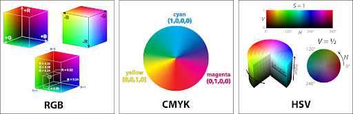

Kleurmodellen
Een kleurmodel is een systeem om kleuren te definiëren en te representeren. Er zijn verschillende kleurmodellen die elk op een andere manier kleuren beschrijven. Enkele veelgebruikte kleurmodellen zijn:
- RGB (Red, Green, Blue): Dit is een additief kleurmodel dat veel gebruikt wordt voor het weergeven van kleuren op elektronische displays, zoals computermonitors en televisies.
- CMYK (Cyan, Magenta, Yellow, Key plate): Dit is een subtractief kleurmodel dat voornamelijk gebruikt wordt in drukwerk, waarbij kleuren worden gemaakt door het mengen van pigmenten.
- HSV (Hue, Saturation, Value): Dit kleurmodel beschrijft kleuren op basis van tint, verzadiging en helderheid, waardoor het handig is voor het manipuleren van kleuren in grafische software.
